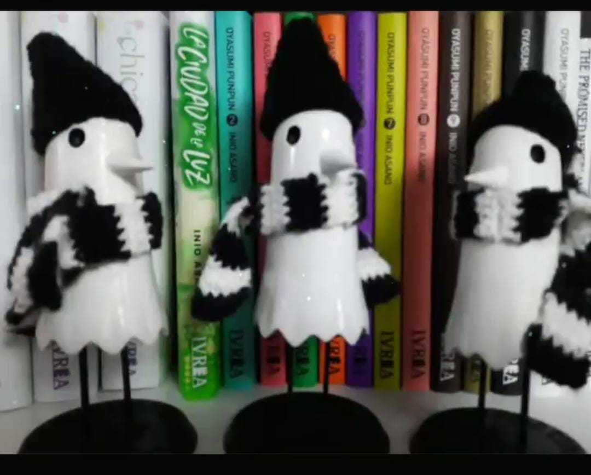
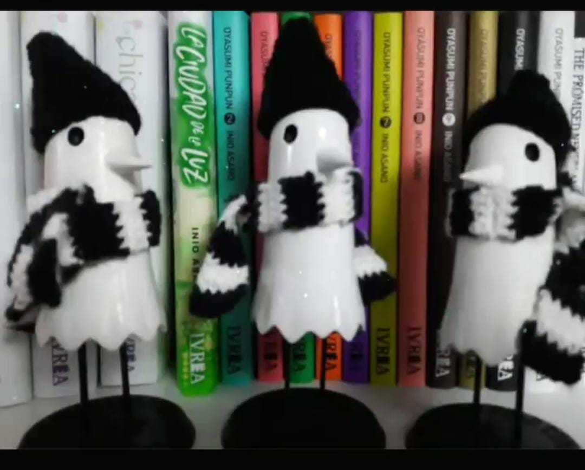
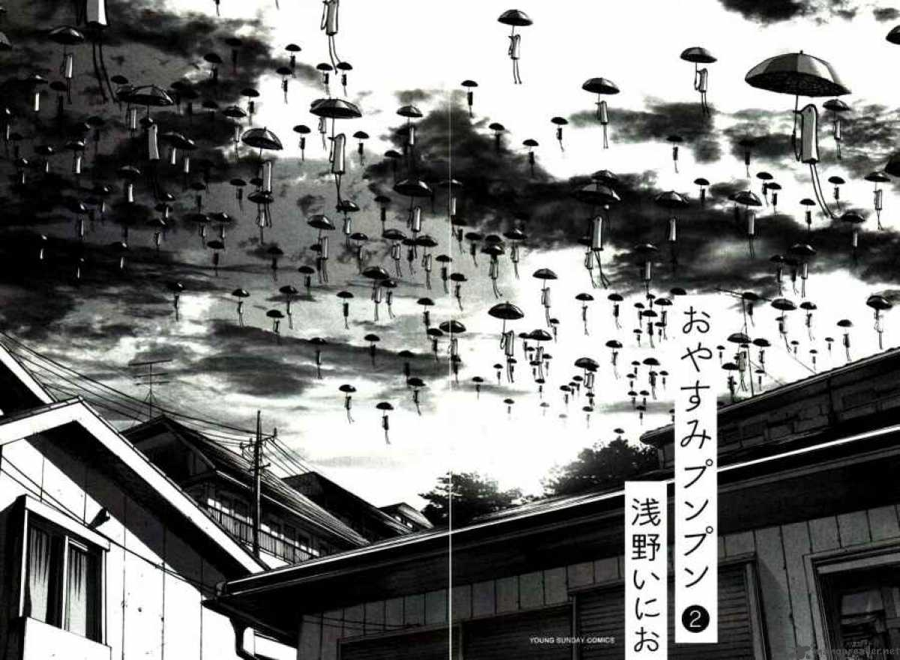
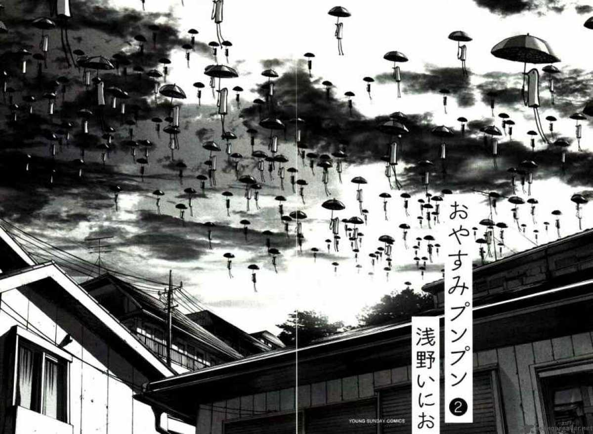

 


LAS FORMAS DEL EGO
Una condición existencial que transforma la vida de Punpun en una eterna espiral autodestructiva, hasta el punto de que llega a considerar el suicidio como la única solución viable a sus problemas. Sin embargo, el encuentro con Sachi le llevará a reconsiderar su existencia.

Oyasumi Punpun (おやすみ プンプン lit. Buenas noches, Punpun?) es un manga japonés escrito e ilustrado por Inio Asano. La historia sigue a Onodera Punpun, un niño normal que debe hacer frente a sus amigos y familia disfuncional, su interés amoroso, su adolescencia en sentido contrario y su mente hiperactiva. A medida que la vida de Punpun se vuelve cada vez más caótica, comienza a tratar temas relacionados al pensamiento autodestructivo del protagonista y su condición existencial. La historia a menudo es elogiada por los muchos puntos de vista filosóficos presentados por cada personaje.
ARGUMENTO
Oyasumi Punpun sigue la vida y las experiencias de Punpun, un muchacho que vive en Japón, así como a algunos de sus amigos. El manga sigue a Punpun a medida que crece, dividiendo el libro en alrededor de 4 etapas de su vida: escuela primaria, escuela media, escuela secundaria y los 20 años.
Un aspecto único de esta obra es el uso de estilización de Inio Asano para dibujar a Punpun y a su familia, representados de forma amorfa y dando la sensación de ser pollos. A lo largo del manga, el camino de Punpun sufre cambios estilizados con su edad, estado de ánimo y el ambiente, llegando a ser representado de la misma forma que el resto de personajes.

Dentro Oyasumi،Punpun hay varias referencias a la astronomía. Uno por encima de todos los Vía Láctea, un elemento fuertemente recurrente en el manga. ¿Cuál es el simbolismo detrás de esto? El propósito de Asano es dar una clave de lectura a su obra, y lo hace desde el primer capítulo del manga, cuando Punpun recibe un telescopio como regalo de su padre, quien en esa ocasión le habla de Vega, y el Triángulo de verano. Una clara referencia al antiguo cuento japonés de Orihime y Hikoboshi, también conocido como el mito de El pastor de vacas y la tejedora.
Punpun es la representación del ego de Asano en el manga, que sobrevive, experimenta experiencias, se ve obligado a relacionarse con el mundo exterior y está subyugado por las contradicciones de la sociedad en la que no logra integrarse. Utilicé verbos pasivos a propósito, porque Punpun es un personaje pasivo, sufre pasivamente todo lo que el destino le atrae.
Todo esto se debe a que al no poder contemplar el gris, según Punpun, la vida sólo puede ser en blanco y negro.